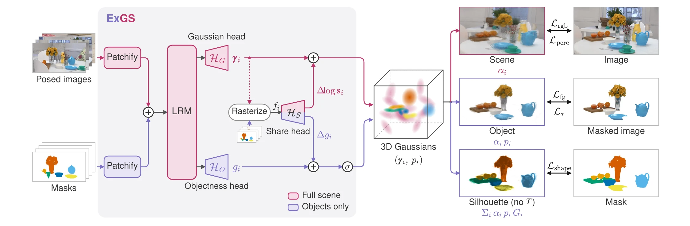
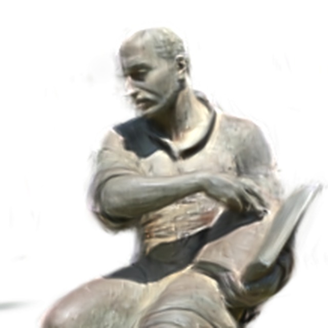
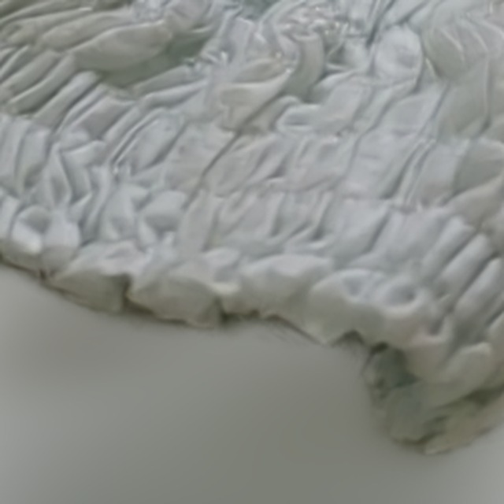

Objects that stay clean once extracted
Every method gets the same posed views and masks. Lifted or optimized objects keep floaters and blurry boundaries; object models lose detail.
ExGS 1.7 s
Baseline on the left, ExGS on the right, from the same moving camera. Times are seconds per scene on one A100.
The scene and its objects, reconstructed once
Scenes unseen during training, each from 8 views. The line sweeps from the full scene to the object extracted from it.
Wheel loader
Family
Telephone
How it works
Feed-forward models are trained on the scene render and never see their objects alone, so Gaussians hidden behind a surface stay uncorrected and turn into floaters once an object is lifted out. ExGS supervises each object after extracting it. It keeps the architecture of its backbone, tttLRM, and adds a mask input channel, an objectness head that selects the object's Gaussians, and a share head that corrects each Gaussian after seeing where it lands.

Each loss on the extracted object fixes one failure. Add them one at a time:


Pixel lift keeps the Gaussians whose source pixel lies in the mask. It leaves floaters around the object.
Accuracy across benchmarks
Five datasets unseen in training, 13 baselines from four families of methods.
Zero-shot object extraction on four unseen datasets
Every method gets the same 8 posed context views and SAM 2 masks. Extracted objects are rendered alone on a white background at held-out views. Time is seconds per scene, for all of its objects, averaged over the four datasets.
| Method | Prim. | Mip-NeRF 360 | LLFF | LERF | 3D-OVS | Time (s) ↓ | ||||||||
|---|---|---|---|---|---|---|---|---|---|---|---|---|---|---|
| PSNRobj ↑ | IoU ↑ | bIoU ↑ | PSNRobj ↑ | IoU ↑ | bIoU ↑ | PSNRobj ↑ | IoU ↑ | bIoU ↑ | PSNRobj ↑ | IoU ↑ | bIoU ↑ | |||
| Training-free lifting | ||||||||||||||
| Pixel lift | 3DGS | 18.27 | 52.2 | 35.6 | 22.66 | 87.6 | 64.7 | 30.27 | 67.4 | 55.1 | 29.11 | 87.9 | 79.0 | 1.6 |
| FlashSplat | 3DGS | 21.00 | 72.8 | 53.3 | 22.44 | 88.2 | 63.4 | 30.68 | 72.7 | 59.4 | 28.73 | 84.6 | 74.1 | 1.7 |
| LUDVIG | 3DGS | 21.38 | 73.7 | 53.5 | 22.49 | 88.6 | 64.3 | 30.81 | 73.3 | 59.7 | 29.02 | 86.7 | 76.3 | 2.6 |
| Per-scene optimization | ||||||||||||||
| COB-GS | 3DGS | 21.03 | 70.7 | 53.0 | 22.66 | 88.1 | 64.5 | 31.05 | 75.0 | 64.8 | 28.94 | 84.1 | 75.4 | 25.0 |
| Trace3D | 3DGS | 21.15 | 72.2 | 49.0 | 20.06 | 79.9 | 45.9 | 30.66 | 75.0 | 63.9 | 28.44 | 84.3 | 71.4 | 11.7 |
| BEA-GS | 3DGS | 18.96 | 72.8 | 56.3 | 22.61 | 89.7 | 70.7 | 29.31 | 71.0 | 61.4 | 27.65 | 87.1 | 78.0 | 15.4 |
| Object models | ||||||||||||||
| ReconViaGen | 3DGS | 16.23 | 60.4 | 39.5 | 16.87 | 75.1 | 48.3 | 25.11 | 67.7 | 56.7 | 23.68 | 81.7 | 67.7 | 14.2 |
| MV-SAM3D | 3DGS | 17.81 | 69.6 | 51.8 | 16.79 | 71.1 | 46.6 | 27.39 | 68.3 | 58.8 | 24.01 | 80.8 | 67.1 | 156.1 |
| Pixal3D | Mesh | 19.17 | 73.3 | 56.9 | 18.92 | 84.0 | 65.2 | 26.76 | 72.1 | 64.2 | 27.72 | 88.3 | 79.1 | 445.6 |
| LSRM | SDF | 22.05 | 81.9 | 66.2 | 22.35 | 89.2 | 73.4 | 31.58 | 83.4 | 77.2 | 30.94 | 92.2 | 86.6 | 25.1 |
| ExGS | 3DGS | 23.23 | 86.3 | 72.3 | 23.80 | 92.4 | 78.7 | 32.23 | 86.2 | 79.0 | 31.60 | 93.1 | 88.1 | 1.7 |
Object extraction on ScanNet++, measured in 3D
Up to four objects per scene on the 50 scenes of the validation split, 8 posed context views, masks rendered from the laser-scan mesh. F-score within 2 and 5 cm and Chamfer distance (CD) are measured against the object's mesh.
| Method | 3D F-score | CD | 2D, held-out views | Time (s) ↓ | |||
|---|---|---|---|---|---|---|---|
| 2 cm ↑ | 5 cm ↑ | (cm) ↓ | PSNRobj ↑ | IoU ↑ | bIoU ↑ | ||
| Training-free lifting | |||||||
| Pixel lift | 20.0 | 33.6 | 50.4 | 23.26 | 52.1 | 28.5 | 1.6 |
| FlashSplat | 23.6 | 39.2 | 51.9 | 23.57 | 57.5 | 34.3 | 1.7 |
| LUDVIG | 25.9 | 41.9 | 46.4 | 23.95 | 59.2 | 35.7 | 2.6 |
| Per-scene optimization | |||||||
| COB-GS | 22.6 | 36.6 | 59.6 | 24.24 | 62.7 | 42.1 | 44.5 |
| Trace3D | 28.1 | 44.9 | 44.6 | 24.90 | 65.5 | 43.4 | 11.7 |
| BEA-GS | 21.3 | 39.5 | 45.2 | 23.80 | 64.4 | 43.4 | 15.4 |
| Object models | |||||||
| ReconViaGen | 31.9 | 55.3 | 11.4 | 21.21 | 61.7 | 41.6 | 24.0 |
| MV-SAM3D | 33.8 | 59.3 | 10.7 | 22.42 | 64.4 | 42.5 | 256.3 |
| Pixal3D | 51.0 | 66.9 | 12.0 | 22.83 | 67.1 | 52.8 | 1416.7 |
| LSRM | 50.1 | 70.0 | 10.5 | 26.25 | 74.5 | 59.1 | 40.9 |
| ExGS | 56.8 | 81.6 | 4.4 | 27.39 | 80.3 | 66.8 | 1.7 |
Semantic feed-forward 3DGS, in their own setting
Two context views, cropped to a square around each object, one run per object. Mean over the four datasets. ExGS receives the two views at its own resolution or, in the 256² row, the same 256 × 256 crops as SIU3R and Uni3R.
| Method | PSNRobj ↑ | IoU ↑ | bIoU ↑ | Time (s) ↓ |
|---|---|---|---|---|
| SIU3R | 21.47 | 67.2 | 47.6 | 0.2 |
| Uni3R | 20.67 | 64.3 | 46.6 | 1.2 |
| EPS3D | 21.12 | 65.9 | 46.2 | 0.4 |
| ExGS, 256² crops | 25.29 | 81.4 | 67.8 | 0.9 |
| ExGS | 25.84 | 83.7 | 70.6 | 0.9 |
Bold: best. Underlined: second best.
Explore ExGS
Watch the four-minute walkthrough. The paper, code and trained models will follow.
Paper soon
Code soon
@misc{masciulli2026exgs,
title = {ExGS: Feed-Forward Gaussian Splatting with Extractable Objects},
author = {Masciulli, Gabriele and Bar{\'a}th, D{\'a}niel and Ricci, Elisa and Mazzucchelli, Alessio},
year = {2026},
note = {Under review}
}